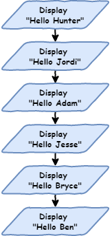
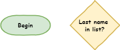
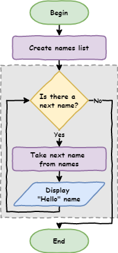

Python Turtle¶
Lesson 2
Topics¶
iteration and how to it to reduce your code length
flowcharts and how to use them to represent program algorithms
how to write Python programs using
forloopshow to use a Thonny’s debugger to trace
forloopshow to use the
rangefunction to generate lists of numbers
Part 1¶
Iteration introduction
Story so far¶
Executing each line of code one after another.
Sequential programming → default movement
Movement of program → the flow of the program
Introduction to flowcharts¶
Flowchart → diagram to show the flow of computer programs.
They show:
each process in the program
the program moving from one process to the next

Program to say hello to six people

Transfer flowchart¶
Create a lesson_2_pt_1.py
# our iteration program
print("Hello Hunter")
print("Hello Jordi")
print("Hello Adam")
print("Hello Jesse")
print("Hello Bryce")
print("Hello Ben")
Sequential flow: line 1 → line 8
Predict and run.
Shell should show:
Hello Hunter
Hello Jordi
Hello Adam
Hello Jesse
Hello Bryce
Hello Ben
Change the order → code will run differently
# our iteration program
print("Hello Jesse")
print("Hello Bryce")
print("Hello Ben")
print("Hello Hunter")
print("Hello Jordi")
print("Hello Adam")
Predict what this code will produce.
Shell should show:
Hello Jesse
Hello Bryce
Hello Ben
Hello Hunter
Hello Jordi
Hello Adam
Sequential becomes a problem with bigger programs
say hello to 500 people, or 1,000 people or more!
decided to say
"good morning"rather than"hello"
Ok for a small program, but becomes a problem
Digital Technologies terminology → not scalable.
Iteration¶
Notice a lot of repetition
Almost the same → only the name changing
# our iteration program
print("Hello Jesse")
print("Hello Bryce")
print("Hello Ben")
print("Hello Hunter")
print("Hello Jordi")
print("Hello Adam")
Against the DRY programming principle

Use iteration to not-repeat-yourself
Often called loops
Repeats code with slight difference
We want to repeat the code print("Hello", name) with a different name each time.
The for loop is the first loop we use
A control structure → causes the program to deviate from flow
Make your code as below:
# our iteration program
names = ["Hunter", "Jordi", "Adam", "Jesse", "Bryce", "Ben"]
for name in names:
print("Hello", name)
Predict what you think will happen then run the code
Investigate by unpacking the code:
names = ["Hunter", "Jordi", "Adam", "Jesse", "Bryce", "Ben"]→ listjust like a real world list
[indicates the beginning and]indicates the end"Hunter","Jordi","Adam","Jesse","Bryce","Ben"items in the list
called elements
elements separated by commas (
,)names =gives the list a namethis list is called
names
for name in names:→ how we create aforloopfor→ keyword identifying the beginning offorloopin names→ repeat the code below using each element of thenameslistname→ the currentnameselement in use:rarr; indented code block follows
print("Hello", name)→ indented.indentation → the code to be repeated
can be many lines.
multi-line indented code → code block.
should be four spaces
print("Hello", name)print
Helloto the Shellprint the current
nameselement in use
For loop flowchart¶
Two more flowchart symbols:

Flowchart for our first for loop

Tracing with debugger¶
Use Thonny’s debugger to see how the for loop works
Launch debugger → click bug beside play button

Keep pressing F7 on your keyboard
Note values in the Variables panel
Code blocks¶
Multi-line indented code → code block
All indented code will repeat
# our iteration program
names = ["Hunter", "Jordi", "Adam", "Bryce", "Ben"]
for name in names:
print("Hello", name)
print("How are you?")
Predict then run
Shell should have:
Hello Hunter
How are you?
Hello Jordi
How are you?
Hello Adam
How are you?
Hello Jesse
How are you?
Hello Bryce
How are you?
Hello Ben
How are you?
All the code block is repeated:
all code at the same indentation level is repeated
important to ensure the whole code block uses the same number of spaces
What if we remove indentation?
Add print("Come in and sit down") to the end.
Don’t indent it.
# our iteration program
names = ["Hunter", "Jordi", "Adam", "Bryce", "Ben"]
for name in names:
print("Hello", name)
print("How are you?")
print("Come in and sit down")
Predict and run your code.
Your Shell should show.
Hello Hunter
How are you?
Hello Jordi
How are you?
Hello Adam
How are you?
Hello Jesse
How are you?
Hello Bryce
How are you?
Hello Ben
How are you?
Come in and sit down
print("Come in and sit down") is not repeated
Runs after the for loop is finished

Part 2¶
List numbers and Range
Introducing range¶
You can also run loops over lists of numbers.
New file lesson_2_pt_2a.py:
number_list = [1, 2, 3, 4, 5, 6, 7, 8, 9, 10]
for number in number_list:
print(number)
How about print the numbers between 1 and 100?
Python’s range function → makes list between two numbers
Change your code:
number_list = range(1, 101)
for number in number_list:
print(number)
PRIMM
Predict what you think will happen
Run the code an see how close your prediction was
Let’s investigate the code.
number_list = range(1, 101)
range→ create a list of numbers1→ first number in the list101→ first number not in the list
Make the code shorter → use range inside the for statement
for number in range(1, 101):
print(number)
Use for Turtle¶
Code blocks contain any code → including Turtle code
New file → lesson_2_pt_2b.py:
import turtle
window = turtle.Screen()
window.setup(500, 500)
my_ttl = turtle.Turtle()
for number in range(1, 101):
my_ttl.forward(100)
my_ttl.backward(100)
my_ttl.left(3)
PRIMM:
Predict what you think will happen, and then run the code. Did it do what you predicted?
Investigate the code by changing aspect of the code.
Modify the code so that is makes a complete circle.
Exercises¶
Exercises are the make component of the PRIMM model
Complete exercises 1 to 5